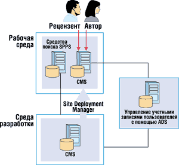
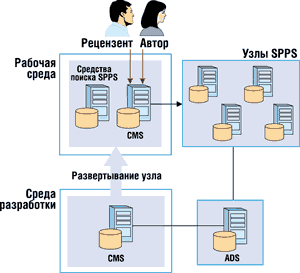
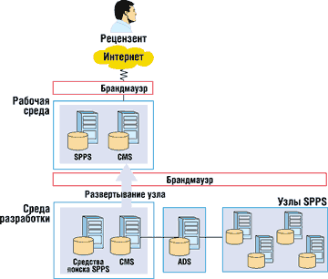

Кирилл Жучков,
менеджер по маркетингу средств разработки и серверов Microsoft .NET российского представительства Microsoft
*См. также статью "Microsoft SharePointPortal как средство управления знаниями", "BYTE/Россия" № 2/2002
Инвестиции в корпоративные системы управления Web-ресурсами упрощают распространение информации между сотрудниками и партнерами, снижают затраты на эксплуатацию информационных ресурсов и Web-узлов, оптимизируют документооборот, способствуют поддержанию фирменного стиля. Посмотрим, какие возможности для снижения затрат на Web-коммуникации предоставляют организациям системы управления Web-ресурсами корпорации Microsoft.
Серверы Microsoft SharePoint Portal Server (CMS) и Microsoft Content Management Server 2001 (SPPS) предназначены для публикации информационных материалов с использованием Web. Эти два продукта дополняют друг друга, позволяя создать полнофункциональное техническое решение для организации совместной работы, публикации документов в Web и управления документами внутри организации. Оба продукта ориентированы на обработку большого объема информации.
Применительно к серверу SPPS информационными ресурсами называют бизнес-информацию, имеющую формат документов или сообщений электронной почты. Доступ к этой информации осуществляется через портал SharePoint.
При работе с сервером CMS под информационными ресурсами понимают также разнообразные Web-материалы, включая текст, картинки, видеоматериалы и документы. Сотрудники основных подразделений публикуют эти информационные материалы с использованием шаблонов на Web-сайтах Интернета, интрасети и экстрасети, созданных с помощью CMS.
Используя сочетание Microsoft SharePoint Portal Server и Content Management Server 2001, организации могут управлять всеми стратегически важными информационными ресурсами, предназначенными как для внутренней, так и для внешней аудитории, на всех стадиях их жизненного цикла.
Microsoft SharePoint Portal Server
Сервер SPPS - гибкое техническое решение, интегрирующее средства поиска и управления документами с программными средствами, используемыми в повседневной деятельности. Продукт работает с браузером Internet Explorer (IE), приложениями Microsoft Office и другими программами, помогая в создании, управлении и совместном использовании документов в организации.
Публикация на узле электронных панелей. Узел электронных панелей используется для предоставления общего доступа к информации, хранящейся внутри и вне организации, а также для поиска и просмотра документов независимо от их местонахождения и формата.
Поиск в нескольких источниках. В SPPS создается индекс для всего содержимого рабочей области, по которому может осуществляться поиск. В индекс можно также включать различную информацию, хранящуюся вне данной рабочей области - в других рабочих областях SharePoint Portal Server, на Web-сайтах, в файловых системах, на серверах Microsoft Exchange Server и в базах данных Lotus Notes.
Доступ к документам на основе ролей. С помощью основанной на ролях системы безопасности сервера SPPS можно управлять доступом к документам, хранящимся в рабочей области.
Отслеживание версий для нескольких документов. Благодаря возможности извлечения и возвращения документов создаются условия, при которых в каждый заданный момент времени с документом может работать только один человек. Сервер сохраняет архивные версии, предназначенные для справок или для восстановления.
Microsoft Content Management Server 2001
Content Management Server 2001 - это система управления корпоративными Web-ресурсами, позволяющая предприятиям быстро и экономически эффективно развертывать динамичные персонализированные Web-сайты электронной коммерции. С ее помощью сотрудники предприятия могут напрямую взаимодействовать с потенциальными клиентами, партнерами и коллегами, публикуя информационные материалы, предназначенные для широкого спектра Web-приложений, используемых в Интернете, интрасети или экстрасети.
Сбор информационных ресурсов для сотрудников. Для создания и использования материалов, рассчитанных на Web-навигацию, имеется многофункциональный набор средств управления информационными ресурсами. Эти средства предназначены для сотрудников основных подразделений организации, не имеющих специальной технической подготовки.
Документооборот на основе ролей. Встроенный процесс прохождения и утверждения документов гарантирует точность получаемой информации.
Персонализированные и целевые информационные ресурсы. Динамическое формирование страниц по запросу обеспечивает предоставление персонализированной информации в режиме реального времени, при этом добавляются метаданные для классификации и персонализации информационных ресурсов.
Многократное использование информационных ресурсов. Хранение информационных ресурсов и управление ими осуществляется отдельно от элементов дизайна узла, что расширяет возможности многократного использования этих ресурсов в различных приложениях. К одним и тем же материалам могут обращаться различные устройства, эти материалы можно интегрировать с другими приложениями электронной коммерции.
Быстрый выход на рынок. Сервер CMS предусматривает быструю разработку приложений на базе технологии, отвечающей отраслевым стандартам, и полнофункционального интерфейса Publishing API.
Масштабируемость и надежность на уровне предприятия. Решения на основе CMS масштабируются вертикально и горизонтально, обеспечивая возможность постоянного развития и наращивания корпоративных приложений для Интернета, интрасети и экстрасети.
Совместное применение серверов
Сочетание систем SPPS и CMS дает определенные преимущества при организации совместной работы в группах. Первый продукт служит для управления документами, организации групповой работы и поиска информации; второй обеспечивает распространение разнообразных Web-ресурсов для широкой аудитории внутренних и внешних пользователей. В числе возможностей, предоставляемых такой комбинацией, можно назвать следующие.
Интегрированный и автоматизированный процесс публикации внешних и внутренних информационных материалов. Управление информационными ресурсами осуществляется в процессе всего их жизненного цикла, от создания документов в группе до их публикации в Web и архивирования.
Оптимизированный процесс прохождения и утверждения документов. Перед публикацией в Web информация проходит многоэтапные двухуровневые процедуры утверждения и прохождения документов, управляемые с помощью сервера Content Management Server.
Доступ к информации и безопасность. На уровне рабочей группы система безопасности SharePoint гарантирует, что только авторизованные пользователи получают доступ к документам и могут вносить в них изменения. На уровне предприятия сервер CMS гарантирует, что только авторизованные пользователи и группы имеют доступ к разделам и даже страницам информации, размещенным на сайтах Интернета, интрасети или экстрасети.
Интегрированные источники информационных ресурсов. Индексированные Web-ресурсы доступны в качестве дополнительного источника информации для портала SharePoint. Управляемые сервером SharePoint документы доступны в качестве еще одного источника информации для хранилища Content Management Server.
Преимущества решения, объединяющего SharePoint Portal Server и Content Management Server 2001, в наибольшей степени проявляются в организациях, где используется узел интрасети, включающий развитые средства поиска в разнородных источниках корпоративных данных, или узел интрасети, предназначенный для управления документами и организации совместной работы над ними в группах с последующей публикацией данных для остальных сотрудников компании, или Интернет-сайт, предназначенный для управления документами и организации совместной работы над ними, перед тем как документы становятся доступны остальным сотрудникам компании.
Сценарии реализации
Серверные продукты SharePoint Portal Server и Microsoft Content Management Server взаимодействуют и дополняют друг друга, обеспечивая работу корпоративных узлов Интернета, интрасети и экстрасети. Мы рассмотрим три типичных технических решения, предназначенных для организаций, которые нуждаются в средствах поддержки портала, управления документами, обеспечения поиска информации и управления корпоративными Web-ресурсами.
В рассматриваемых ниже примерах CMS используется для управления структурой Web-сайта, его оформлением и размещением разнообразных материалов. Сервер SPPS служит для управления документами, организации совместной работы в группах и поиска информации. На уровне рабочей группы квалифицированные сотрудники могут также управлять Web-страницами Content Management Server на портале рабочей группы. Кроме того, CMS может применяться для создания шаблонов, используемых вместе с электронными панелями для управления интерфейсом портала SharePoint.
Сценарий 1
Узел интрасети с развитыми возможностями поиска
В этом сценарии узел интрасети содержит разнообразные информационные ресурсы, в том числе текст, изображения и видеоклипы, обслуживаемые сервером Microsoft Content Management Server. На узле имеется средство поиска, работу которого обеспечивает SharePoint Portal Server, предоставляющий доступ к документам компании, а также средство полнотекстового поиска на узле интрасети (рис. 1).
|  | Рис. 1. Узел интрасети Microsoft Content Management Server со средствами поиска SharePoint.
|
Посетители узла интрасети автоматически подвергаются процедуре проверки подлинности, предусмотренной в операционной системе Windows. Доступ пользователей к различным областям узла контролируется сервером CMS - с его помощью можно обеспечить защиту информации на уровне страницы. Например, на одной и той же странице все сотрудники компании будут видеть обзор финансового отчета, а сотрудники бухгалтерии увидят также ссылку на сам документ.
CMS поддерживает структуру узла интрасети и шаблоны для стандартных участков этого узла, относящихся к внутренней сети. Информация публикуется и в исходном формате документов, и в виде разнообразных Web-материалов, например, объявлений или информации о политике компании. Средства поиска SPPS обеспечивают доступ ко всей информации, содержащейся в файловой системе и других хранилищах информации.
В этом сценарии первоначальная разработка Web-сайта и всех его новых областей или разработка основных версий узла выполняется в среде разработки. На начальном этапе формируются структура сайта и шаблоны, определяются права пользователей, а средство поиска интегрируется с Web-сайтом. Здесь же осуществляется все тестирование. Управление учетными записями пользователей выполняется с помощью сервера, на котором запускается служба Windows 2000 Active Directory, применяемая для управления учетными записями всех пользователей в организации.
После окончания тестирования структура узла переносится на рабочий сервер с помощью средства Site Deployment Manager сервера CMS, а для переноса всех внешних файлов можно использовать программу Microsoft Application Center. Сбор и публикация информационных материалов выполняются на рабочем сервере. Посетители интрасети, в которой развернут узел, также обращаются к этому рабочему серверу (посетители сайта и поставщики информационных материалов - это сотрудники организации, причем часто одни и те же лица).
Сервер SPPS используется для сбора информации и компиляции полнотекстового индекса содержимого Web-сайта. Кроме того, к страницам с информацией присоединяются метаданные для дальнейшего уточнения поиска. Эти метаданные также индексируются SPPS. Расписание сбора информации для индексирования зависит от частоты обновления материалов на Web-сайте.
Важные аспекты реализации
При использовании в масштабе компании продуктов Content Management Server в качестве серверов разработки и рабочих серверов следует применять кластеры.
Кроме индексации содержимого Web-сайта интрасети, сервер SPPS может обеспечивать доступ к документам в файловых хранилищах организации. Пользователи, имеющие доступ к какому-либо хранилищу, получают доступ ко всем опубликованным документам в этом хранилище. Если требуются более высокие уровни детализации для доступа к документам, организации могут реализовать второе решение, где непосредственный доступ к файловым хранилищам разрешен определенным рабочим группам, и с помощью сервера CMS организуется доступ к информации на основе определенных в нем групп пользователей, имеющих права подписчиков.
Метаданные (ключевые слова и описательные теги) могут быть реализованы в шаблонах CMS с помощью текстовой строки или заранее подготовленных списков. Квалифицированные сотрудники, собирающие информационные материалы, возможно, предпочтут метод текстовой строки, позволяющий им вводить любые ключевые слова, которые, по их мнению, соответствуют поставляемым материалам. Однако менее опытные сотрудники, собирающие информационные материалы, могут счесть более удобным выбирать ключевые слова из списка, заранее подготовленного на основе нескольких основных категорий. Для многих организаций, впрочем, для индексирования узла интрасети достаточно просто полнотекстового поиска SharePoint.
Сценарий 2
Интрасеть с возможностью управления документами
В этом сценарии продукт SPPS используется для организации совместной работы в группах и управления документами перед их публикацией с использованием CMS. За создание документов отвечают небольшие группы специалистов. Они используют SPPS для создания документов и управления ими, а когда документы предоставляются широкой аудитории, доступ к ним осуществляется через интрасеть с использованием шаблонов Content Management Server, которые обеспечивают связь с хранилищем SharePoint (рис. 2).
|  | Рис. 2. Интрасеть с возможностями совместной работы в группах, применяемая для управления документами и поиска.
|
Этот вариант обеспечивает более надежную защиту документов, поскольку посетители узла получают доступ только к тем документам, которые публикуются с помощью CMS на узле интрасети. Они не имеют доступа ко всем опубликованным документам в общей папке рабочей группы. Кроме того, связь непосредственно с хранилищем исключает дублирование информации. Этот сценарий используется в ситуации, когда необходимо сделать доступной для более широкого круга сотрудников некоторую (но не всю) информацию из общей папки определенной рабочей группы.
На уровне рабочей группы с помощью сервера CMS можно также создавать шаблоны для интерфейса портала SharePoint, упрощающие процессы обновления и управления. В то же время динамически генерируемые средства навигации и информационные ресурсы CMS могут быть включены в портал электронных панелей, используемый участниками рабочей группы. Кроме того, любые пользователи портала рабочей группы, которые занимаются сбором информационных ресурсов для CMS, могут управлять этими ресурсами с помощью интерфейса портала SharePoint.
Как и в предыдущем сценарии, функция поиска SPPS используется для индексации содержимого Web-сайта интрасети. Аналогично первому варианту организуется и поиск с применением метаданных.
Первоначальная разработка Web-сайта и всех его новых областей, задание прав, интеграция поисковой машины с Web-сайтом и тестирование здесь также выполняются на сервере со средой разработки. Для управления учетными записями пользователей используется служба Active Directory. Перенос на рабочий сервер структуры узла и внешних файлов здесь тоже выполняется с помощью соответственно Site Deployment Manager и Microsoft Application Center.
Доступ к документам организации, хранящимся в каталогах SPPS, осуществляется через страницы CMS. Доступ со страниц CMS к документам происходит непосредственно из портала SharePoint - благодаря этому уменьшается потребность в дублировании материалов, а для обработки всегда оказывается доступной последняя версия документа. Поскольку сотрудники организации обращаются к информации только через узел интрасети, им доступны лишь те документы, которые были явно включены в интрасеть, а не все содержимое каталога SharePoint рабочей группы. При этом доступны только документы, имеющие в SharePoint статус published ("опубликован"), но не рабочие версии.
Важные аспекты реализации
При использовании в масштабе компании серверов CMS следует применять кластеризацию и в среде разработки, и в рабочей среде.
Можно создавать шаблоны CMS для доступа к тем или иным каталогам SharePoint в зависимости от определенных критериев, например, местоположения узла. С другой стороны, сотрудники, собирающие информацию, могут добавлять документы из каталога SharePoint так же, как они добавляют документы из хранилища Content Management Server.
Документы могут отображаться или в виде ярлыка файла, который можно загрузить с Web-сайта интрасети, или в виде полноценного текста, размещенного на странице Web-сайта. Рекомендуется комбинировать эти два метода: включить ярлык, позволяющий загрузить документ, но предоставить на странице и некоторую информацию из документа в качестве аннотации. Для этого применяется метод Placeholder.setHTML, предусмотренный в интерфейсе Publishing API сервера Content Management Server.
Сценарий 3
Интернет с возможностью управления документами
Этот сценарий в целом напоминает сценарий 2. Разница состоит в том, что по соображениям безопасности Web-сайт Content Management Server не предоставляет непосредственного доступа к документам из хранилища SharePoint (рис. 3).
|  | Рис. 3. Сайт в Интернете со средствами поиска и управления документами рабочей группы.
|
В этом сценарии сервер Microsoft Content Management Server используется для управления корпоративным сайтом в Интернете. SPPS служит для организации совместной работы в группах и управления документами. Документы, утвержденные с помощью SPPS, передаются в хранилище CMS и становятся доступными для широкой аудитории через Интернет. Документы содержатся в хранилище информации CMS; они автоматически обновляются, когда в хранилище SPPS меняется утвержденная версия. Такой метод гарантирует своевременную публикацию документов и одновременно обеспечивает безопасность корпоративной сети.
В этом методе реализуется двухуровневый процесс документооборота и утверждение документов перед предоставлением их в общий доступ. Документооборот первого уровня осуществляется на этапе совместной работы в группе. Члены группы работают над документами, которые станут доступными для остальных сотрудников организации после утверждения. Некоторые документы, которые должны быть доступны остальным сотрудникам организации, передаются также в хранилище CMS. Здесь они включаются в процесс документооборота на сервере CMS, а затем попадают в открытый доступ на Web-сайте.
Функция поиска SPPS используется также в качестве средства поиска на внешнем Интернет-сайте. Расширяемые метаданные служат для индексации страниц узла. Они также используются функцией поиска SharePoint Search и средствами создания индекса, применяемыми на внешних Web-сайтах. Дополнительные сведения о поиске см. в описании сценария 1.
В этом сценарии обе системы, CMS и SharePoint, сосуществуют в среде разработки, обеспечивая репликацию рабочей среды. Все операции по разработке узла и сбору информационных материалов выполняются на сервере разработки. Все тестирование также выполняется на этом сервере. Управление учетными записями всех пользователей в организации выполняется с помощью службы Active Directory. Отдельные хранилища информации SharePoint передают документы серверу CMS, находящемуся в среде разработки. Они остаются в хранилище информации этого сервера и доступны для использования лицам, занимающимся сбором информации для Web-сайта. Документы обновляются, когда изменяется опубликованная версия, содержащаяся в хранилище SharePoint.
Для первого развертывания рабочего сервера полная база данных узла и содержащиеся на нем файлы архивируются и реплицируются на рабочий сервер с использованием продуктов SQL Server и Microsoft Application Center. Для последующего обновления информационных материалов используется средство Site Deployment Manager сервера CMS, переносящее на рабочий узел новые материалы при публикации с помощью автоматизированного триггера.
Важные аспекты реализации
В реальном сценарии между средой разработки и рабочей средой находилась бы среда проверки собранных информационных материалов. Кроме того, в рабочей среде необходимо использовать средство балансировки нагрузки, а также кластеризацию серверов.
Когда документ впервые переносится на сервер Content Management Server, сотрудник, занимающийся сбором информационных материалов и определяющий местоположение документа на узле, должен вручную поместить его на соответствующую страницу. При последующих публикациях из SharePoint документ можно автоматически перемещать на сервер CMS, поскольку местоположение документа уже определено.
Когда дата публикации документа, опубликованного SPPS, меняется, сценарий запускает загрузку нового файла на сервере CMS. Этот сценарий может выполняться или на сервере SPPS, который передаст документ на сервер CMS, или, наоборот, сценарий может выполняться на CMS, который получит документ с SPPS. Content Management Server будет искать документ в хранилище информации по уникальному идентификатору документа и заменит его на более новый документ SharePoint. Важно определить, как должен осуществляться документооборот после первой публикации документа с сервера CMS. При первой публикации документ всегда проходит весь процесс документооборота CMS. Однако для своевременной публикации документа, утвержденного рабочей группой SharePoint, процесс утверждения может быть пропущен, если в организации предъявляется такое требование.
* * *
Перечисленные простые варианты могут быть расширены и дополнены таким образом, чтобы Content Management Server 2001 и SharePoint Portal Server участвовали бы во всех Web-проектах организации, в которых используется Интернет, интрасеть или экстрасеть.